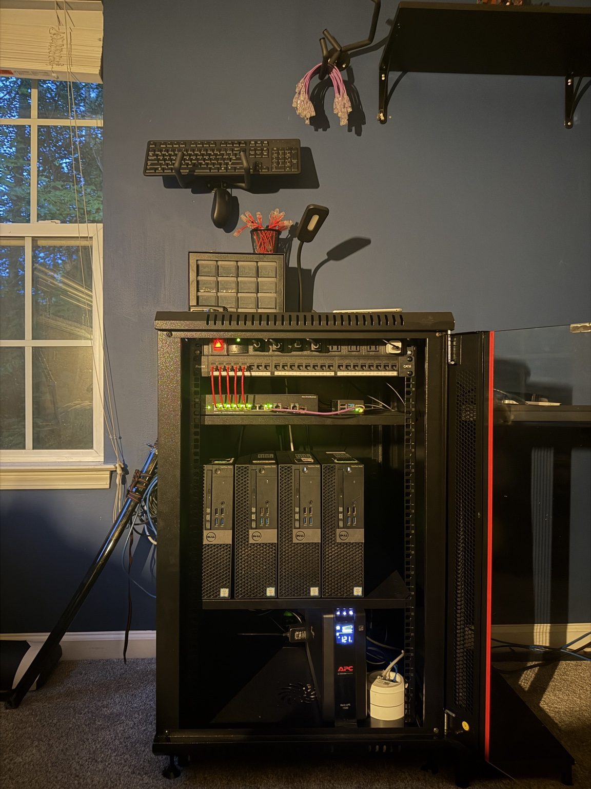

I am a cybersecurity and business student at the University of North Carolina Wilmington focused on developing practical experience through enterprise IT support, cybersecurity projects, virtualization, networking, Linux administration, automation, and my personal homelab.
$ whoami
Patricio Aspero
$ focus
cybersecurity / infrastructure / automation
$ environment
Proxmox • Linux • TrueNAS • Raspberry Pi
$ current_project
AI-assisted homelab operations
$ status
always learning...
My portfolio focuses on projects that let me apply cybersecurity, networking, systems administration, and automation concepts outside of the classroom.
I am pursuing studies in Cybersecurity and Business Administration at the University of North Carolina Wilmington, combining technical security skills with an understanding of business operations, risk, and organizational decision-making.
My experience includes enterprise IT support, Linux and Windows administration, networking, virtualization, monitoring, remote access, storage, scripting, and experimenting with local AI for infrastructure automation.
These projects represent the areas where I have spent the most time building, troubleshooting, and learning.
A multi-node Proxmox environment with dedicated TrueNAS storage, independent monitoring, remote-access infrastructure, centralized backups, and multiple virtualized services.
Bash and Python projects for infrastructure health checks, network discovery, automated reporting, Discord integration, backups, and AI-assisted administration.
My customized deployment of NetworkBound's Homelab Galaxy Dashboard, integrated with my Proxmox infrastructure and automated discovery tooling.
A local AI and automation VM using Ollama, custom health-check scripts, automated briefings, monitoring data, and experimental infrastructure automation.
An Nmap-driven Python pipeline that discovers systems, processes device information, applies classification, and generates topology data for documentation and visualization.
Scheduled infrastructure checks collect cluster, monitoring, update, application, and storage data before a local LLM produces a human-readable morning briefing.

What started as a few systems has grown into a physical lab used to practice infrastructure administration, networking, virtualization, monitoring, storage, security, and automation.
Technologies I have worked with through coursework, IT support, cybersecurity projects, and my homelab.
My coursework includes network security, cryptography, ethical hacking, information assurance, Linux administration, Windows systems administration, networking, cybersecurity program management, and business fundamentals.